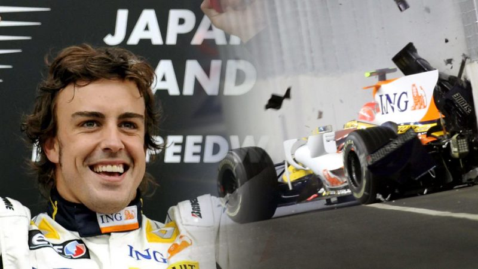
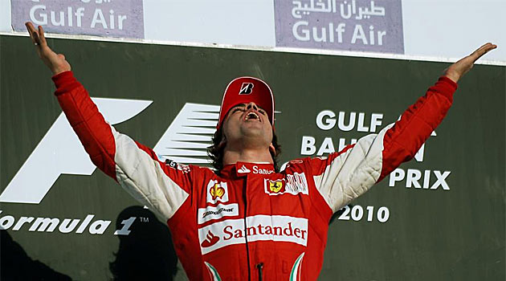
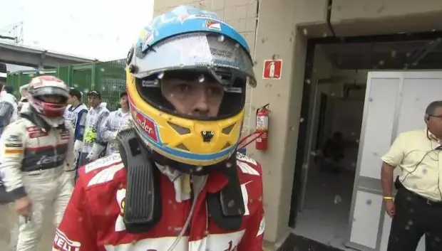
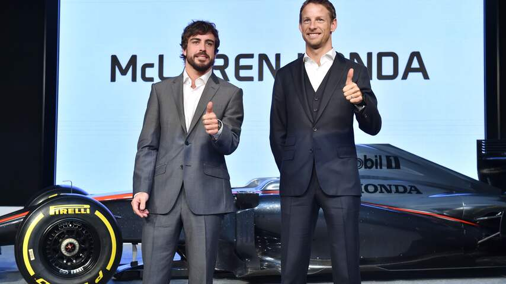
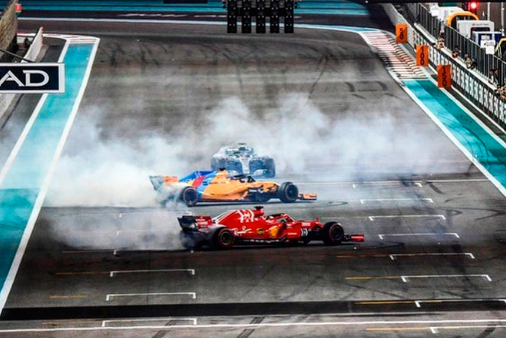
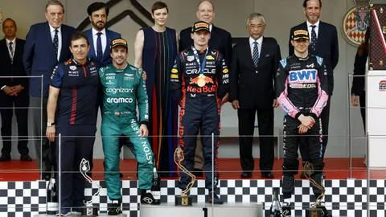

Pero
Cual ha sido su trayectoria?
Debutó en 2001 con la escuderia Minardi, donde apenas pudo hacer nada, ya que era de los peores equipos de la parrilla.

En 2003 debutó con Renault, en donde consiguó su primera pole position en Malasia y su primer victoria en el GP de Hungria.
En 2005 tuvo una batalla contra Kimi Raikkonen, piloto de Finlandia, por el campeonato de pilotos, en la que el piloto asturiano salió victorioso con 15 Podios, 7 victorias y 6 Poles, ganando el titulo en el GP de Brasil.

En 2006 volveria a batallar por el mundial, esta vez su contrincante era el siete veces campeón del mundo, Michael Scumacher.
Fue una batalla trepidante hasta el final, pero Fernando Alonso volvió a ganar el campeonato con 14 podios, 7 victorias y 6 poles.

En 2007 fichó por McLaren, en donde su mayor contrinacnte fue su própio compañero, el debutante Lewis Hamilton.
Ambos fueron victimas del famoso Spygate, que provocó que Mclaren fuera descalificada del mundial de constructores.

En ese año Kimi Raikkonen consiguió el mundial, por culpa de que los dos pilotos de McLaren se restaran puntos entre ellos.
En 2008 volvió a Renault, pero en esa oportunidad, le hicieron un coche nefasto, no pudo luchar por el mundial.
Sin embargo, Flavio Briatore tuvo una idea para que Fernando ganase en Singapur, usarian a su segundo piloto, Nelson Piquet Jr, hijo de Nelson Piquet.
El plan consistia en que Nelson se estrellaria justo cuando Fernando parara en boxes para así ponerse primero y ganar la carrera, esto salió a pedir de boca y Alonso ganó la carrera.
Además de esta victoria, consiguió otra esa temporada, justo el día de la hispanidad, el 12 de octubre.
En 2010 aterrizó en la Scuderia Ferrari, comenzó la temporada ganando en el circuito de Sakhir, un inicio inmejorable para el asturiano.
Lamentablemente no pudo ganar el título ese año, lo ganó el Alemán Sebastian Vettel, a manos de su RedBull.

En 2011 no pudo luchar por el mundial, debido a la aplastante ventaja que tuvo el RedBull sobre el resto de equipos, ganando otra vez el mundial Sebastian Vettel.
En el 2012 hizo bajo mi criterio su mejor temporada, teniendo actuaciones como en Malasia o en Valencia, donde ganó saliendo desde el undécimo puesto.
Sin embargo Sebastian Vettel no se dejó vencer y ganó el mundial en la última carrera de la temporada, dejando a Fernando con las manos vacias.
En 2013 ganó su última carrera en el circuito de Barcelona, pero no pudo luchar por el mundial.
En 2014, hubo un cambio de reglamento, y Ferrari no estuvo a la altura, pero Fernando hizo el triple de puntos que su compañero Raikkonen.
En 2015 fichó por el ilusionante proyecto de Mclaren-Honda siendo compañero de Jenson Button, campeón en 2009 con Brawn GP.
Lamentablemente era de los peores equipos, con innumerables problemas de fiabilidad, terminando 17 en el mundial de pilotos y Mclaren terminó 9, únicamente delante de Manor Marussia.
En 2016 fueron un poco a mejor, Fernando pudo acabar 10 en el mundial de pilotos, y Mclaren quedó 6 en el mundial de constructores.
En 2017 Mclaren empeoró bastante y volvió a los resultados del 2015, quedando Mclaren otrea vez 9 en el mundial de constructores y Fernando en el 15 en el mundial de pilotos.
En 2018 cambiaron el motorista a Renault y Mclaren mejoró mucho, hubo un momento en el que Fernando estaba 6 en el mundial de pilotos, tras el GP de China.
A final de año, Alonso sumó 50 puntos y quedó 11 y Mclaren terminó 6 en el mundial de constructores.
Además, Fernando anunció su retirada temporal de la categoria reina, por esto Lewis Hamilton y Sebastian Vettel hicieron donuts para homenajear a Fernando.
En 2019, siguió a los mandos de un monoplaza y participó en la WEC (Campeonato mundial de resistencia), se llevó el título en 2019, una de sus victorias fue en las 24 horas de Le Mans, uno de los mejores circuitos del mundo.
En este mismo año participó en las 24 horas de daytona, que también las ganó, y ya en 2020, participó en el Dakar.

Volvió a la categoria reina en 2021 con Alpine donde consiguió un podio en Qatar.
Ya en 2023, aterrizó en Aston Martin donde en ese año sumó un total de 8 podios, uno de ellos Mónaco, en donde si no llega a ser por una mala estratégia, posiblemente hubiera ganado la carrera.
